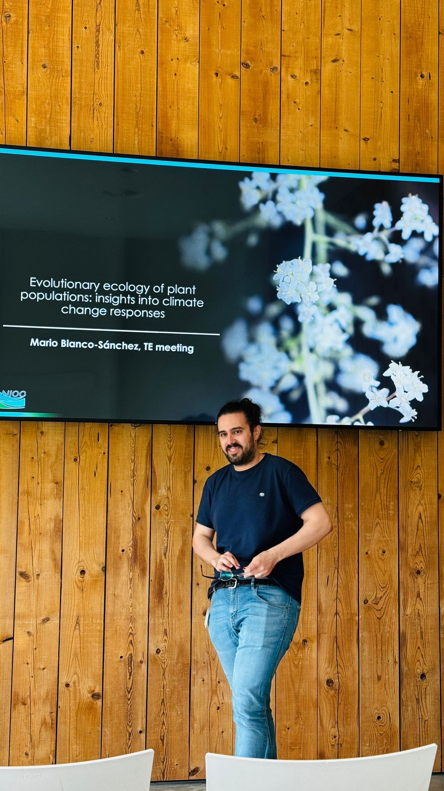

Postdoctoral researcher · NIOO-KNAW Wageningen, the Netherlands

TE meeting, May 2024. NIOO-KNAW, The Netherlands
01 / About
Research profile
I am a plant evolutionary ecologist investigating how neutral evolutionary processes, adaptive evolution, and phenotypic plasticity shape intraspecific trait variation.
Specifically, my research focuses on how adaptive evolution and phenotypic plasticity interact to shape plant population responses to environmental variation across space and time.
To do so, I combine field studies, common-garden experiments, and genomic, epigenomic, and transcriptomic approaches to connect variation in traits with fitness and underlying mechanisms.
Postdoctoral research in Terrestrial Ecology, with Koen Verhoeven. Thermal adaptation and plasticity in Lemna minor.
2018 — 2023
Universidad Rey Juan Carlos
PhD in Conservation of Natural Resources, focused on genetic variation, natural selection and phenotypic plasticity of Mediterranean gypsum specialists. Supervised by Silvia Matesanz. Cum Laude, International Doctorate and Extraordinary Doctorate Award.
02 / Research
Variation, in context
From the eco-evolutionary history of populations to their future responses: Evaluating and contextualizing the causes and consequences of intraspecific trait variation
I.
Evolutionary history & past adaptation:Phylogeography and footprints of selection
How do evolutionary history and environmental conditions in populations’ places of origin shape genetic and trait variation? I investigate phylogeography, genetic structure, and past adaptation to local conditions across species’ ranges.
Current and future adaptive responses:Phenotypic plasticity and potential response to selection
What trait values and phenotypic changes are adaptive? Field studies, common-garden and resurrection experiments connect trait variation and plasticity with fitness under drought, heat, and changing environmental conditions. I investigate patterns of natural selection and the potential response to selection in traits and plasticity.
Underlying mechanisms behind adaptive responses:Genomics, epigenomics and transcriptomics
My current work brings experiments together with genomic, epigenomic, and transcriptomic approaches to investigate environmental responses and the mechanisms underlying phenotypic plasticity.
My research grows through collaborations across research groups, countries, and study systems. Explore the papers behind such collaborations.
Coauthor network
Select a person to explore their papers. Colours show affiliation countries recorded in these publications, including past affiliations; split nodes indicate more than one country. Lines connect coauthors, and larger nodes indicate more papers in this collection.
Select a node or choose a name to explore the papers.
2025 — presentNetherlands Society for Evolutionary BiologyJunior Board member
2024 — presentNIOO-KNAWSeminar and PhD supervision-needs committees; Green Team; AI thinktank and AI committee.
Teaching & supervisionSupporting early-career researchersStudent internships and BSc/MSc theses; field and laboratory teaching in ecology, evolutionary biology and botany.
I have experience applying to NWO Veni, the KNAW Ecology Fund, AEET research calls, César Nombela, and the “la Caixa” Junior Leader programme. If you are preparing an application and would like to exchange experiences, please get in touch.